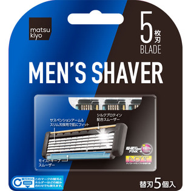
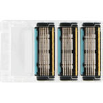

返回列表
产品名称：ｍａｔｓｕｋｉｙｏ メンズ カミソリ５枚刃

貝印カミソリ ｍａｔｓｕｋｉｙｏ メンズ カミソリ５枚刃 替刃５個入
メーカー 貝印カミソリ
JANコード 4901331001833
商品の特徴
ダブルスムーザーにより抜群の潤いを実現したメンズカミソリホルダー５枚刃の替刃です。
５個入りです。
成分・分量
【素材】
ステンレス刃物鋼、チタンコーティング、水溶性樹脂、吸水性樹脂、ＡＢＳ、ＴＰＥ
用法及び用量